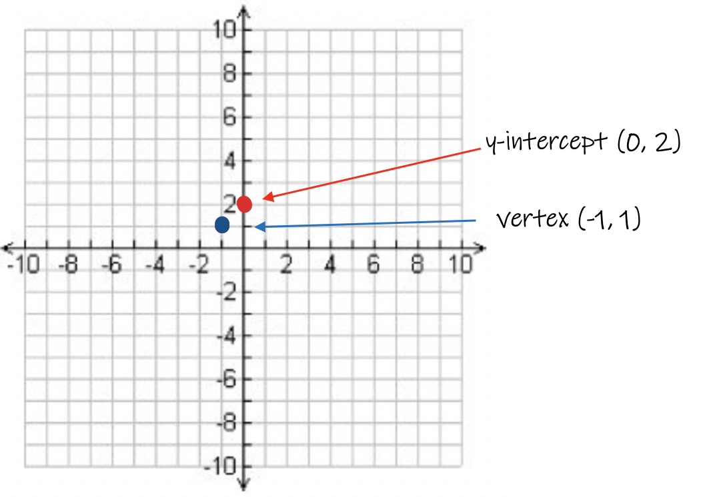
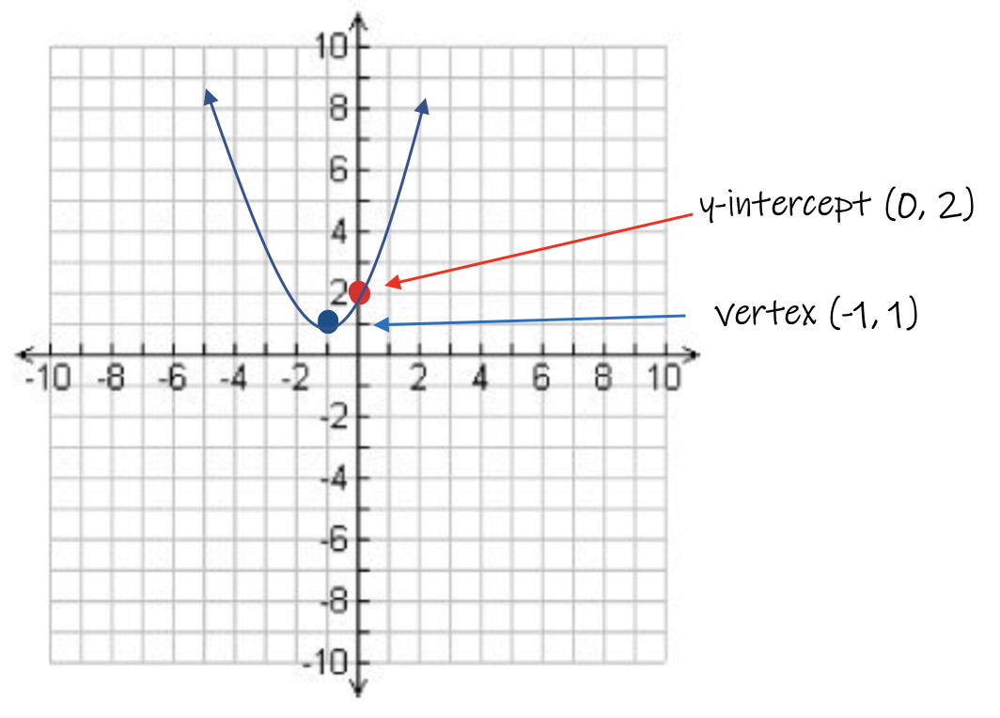
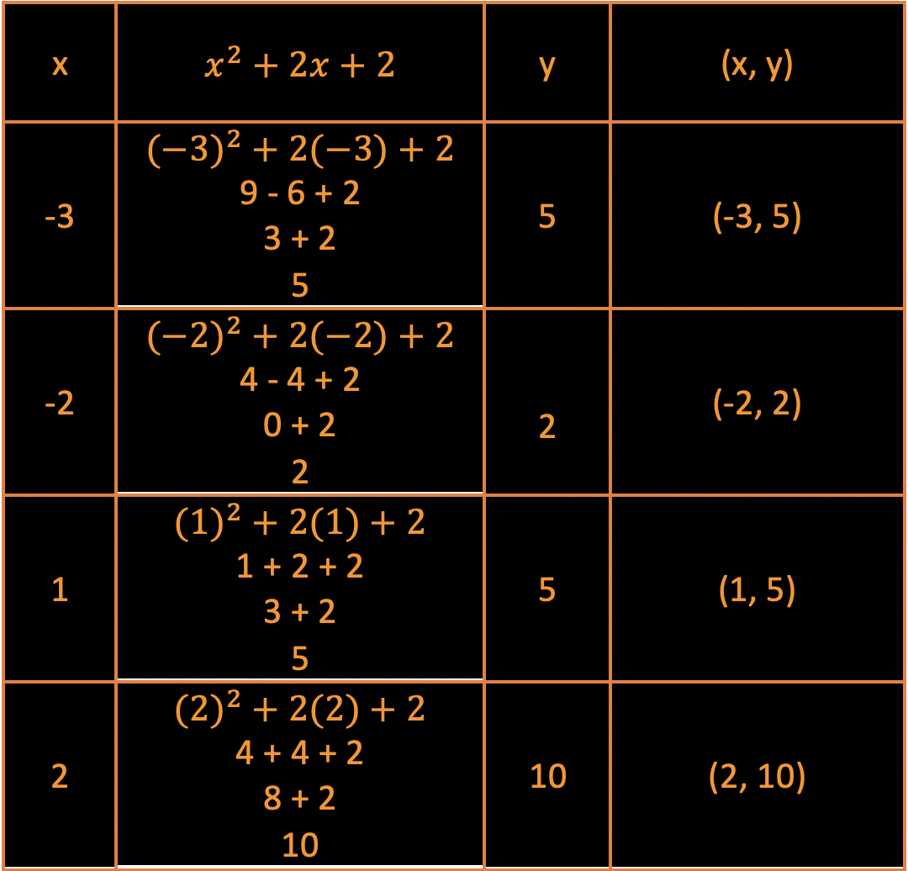
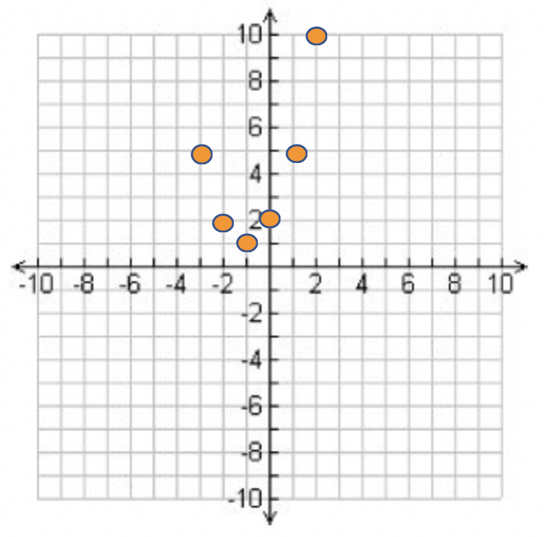
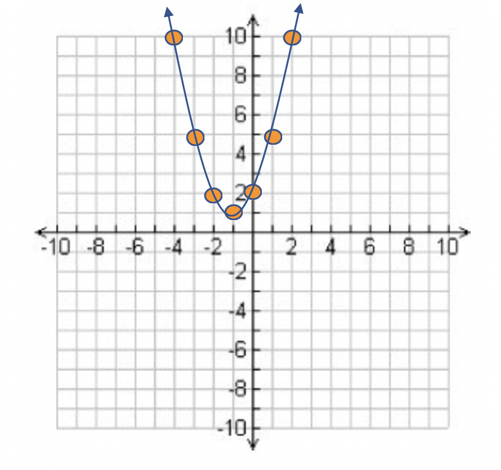
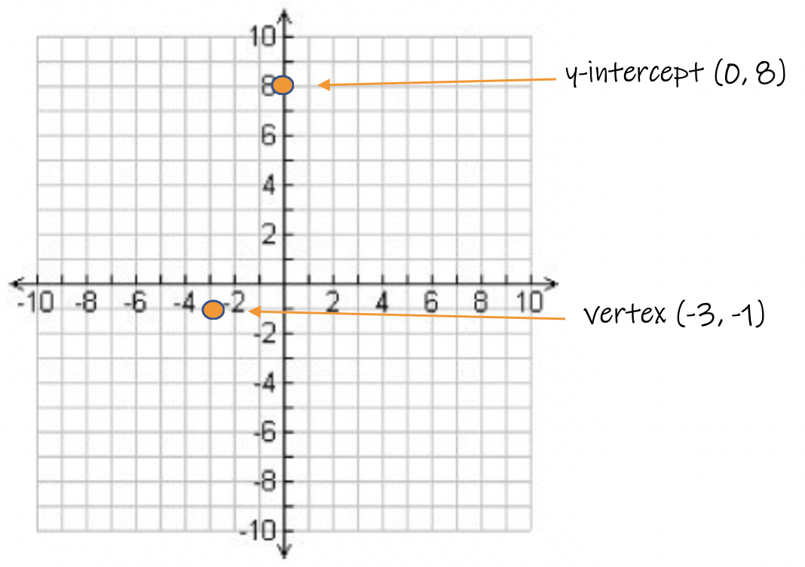
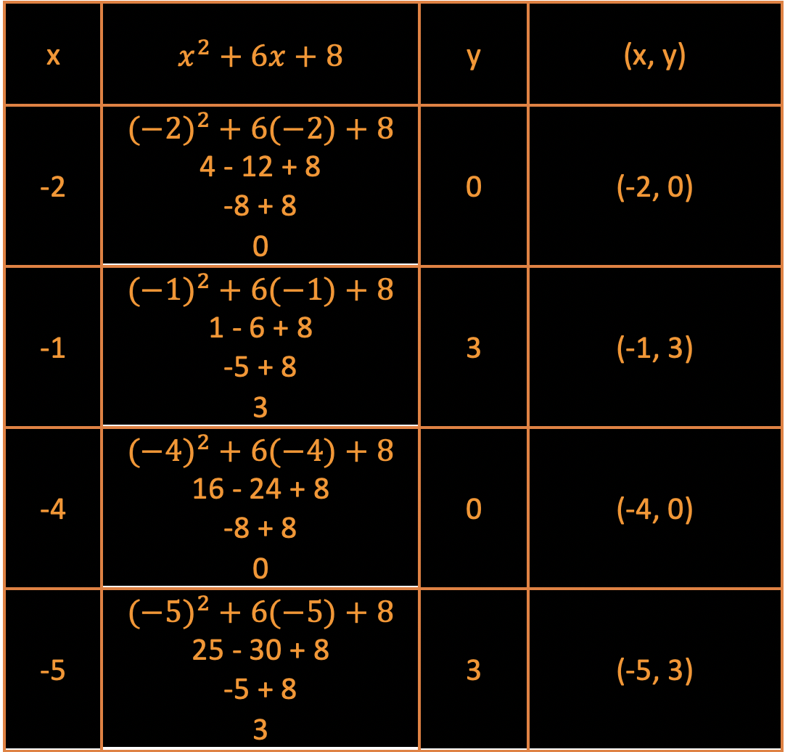
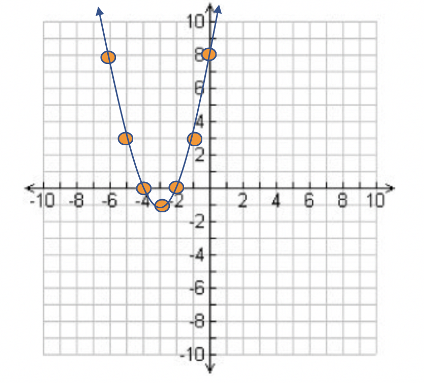

Please review the Intro to Parabolas Module prior to beginning this module.
The "Vertex Form" of a Parabola is written as f(x) = a(x - h)2 + k
The "Standard Form" of a Parabola is written as f(x) = ax2 + bx + c
Examples of equations in Standard Form:
f(x) = x2 + 3x + 2
f(x) = 2x2 + 7x + 3
In order to convert the Vertex Form into Standard Form, you will need to use FOIL and PEMDAS.
Example 1:
Convert f(x) = 2(x - 4)2 + 3 into Standard Form. Steps:
Foil: (x - 4)2
Answer: x2 - 8x + 16
f(x) = 2(x2 - 8x + 16) + 3
PEMDAS states we need to multiply next
Answer: 2x2 - 16x + 32 + 3
Next we simplify: 2x2 - 16x + 35
This will be your answer.
Example 2:
Convert f(x) = 3(x + 2)2 + 5 into Standard Form. Steps:
Foil: (x + 2)2
Answer: x2 + 4x + 4
f(x) = 3(x2 + 4x + 4) + 5
PEMDAS states we need to multiply next
Answer: 3x2 + 12x + 12 + 5
Next we simplify: 3x2 + 12x + 17
This will be your answer.
Example 3:
Convert f(x) = -4(x + 5)2 - 7 into Standard Form. Steps:
Foil: (x + 5)2
Answer: x2 + 10x + 25
f(x) = -4(x2 + 10x + 25) - 7
PEMDAS states we need to multiply next
Answer: -4x2 - 40x - 100 - 7
Next we simplify: -4x2 - 40x - 107
This will be your answer.
Parabolas can be graphed when written in Vertex Form or Standard Form. The graphs will be the same. In the "Intro to Parabolas" Module, we covered all the critical information to make a rough draft sketch of the parabola. In this section, we will learn how to graph the equation in Standard Form.
When graphing a parabola, we will use several cues from the equation. We will also need to locate the vertex and the y-intercept of our parabola. The Standard Form of the equation is: f(x) = ax2 + bx + c
The vertex occurs at the location x = -b ÷ (2・a) and y = f(-b ÷ (2・a)). This may seem weird, but what it is saying mathematically is use the values of a and b to get the x-coordinate of the vertex, then substitute that number into the equation to get the answer, which is the y-coordinate of the vertex. The two values written as an ordered pair (x, y) will be the location of the vertex.
The y-intercept occurs when the x-coordinate is zero. So using substitution of x = 0 into the equation will give us the y-coordinate of the y-intercept. Written as an ordered pair (x, y) we can plot the y-intercept.
Additional points can be plotted to make the graph by choosing different x-values and calculating their corresponding y-values. Plotting each point will make the graph complete. Picking the values to substitute in will depend upon the location of the vertex. Always choose an equal number of points to the left and right-sides of the vertex.
Graph each Equation
Example 1: f(x) = x2 + 2x + 2
a = 1, b = 2, c = 2
Locate the vertex using the formula x = -b ÷ (2・a)
Using substitution: x = -2 ÷ (2・1)
x = -2/2 or x = -1
Using substitution of x = -1 into the original equation f(x) = x2 + 2x + 2 will generate the y-coordinate.
f(-1) = (-1)2 + 2(-1) + 2
f(-1) = 1 - 2 + 2
f(-1) = -1 + 2
f(-1) = 1
or y = 1
The vertex is at x = -1 and y = 1 or (-1, 1)
The y-intercept occurs when x = 0. Using substitution into the original equation f(x) = x2 + 2x + 2
f(0) = 02 + 2(0) + 2
f(0) = 0 + 0 + 2
f(0) = 2
or y = 2
When x = 0, y = 2. The y-intercept is at (0, 2)
Plot the 2 points to start your graph.

Now it is up to you to pick x-values and use substitution to get the corresponding y-values in order to get more points to plot our graph. We know the graph opens upward since the value of "a" is positive.

A "rough draft" sketch is shown. We need to calculate more points to make our graph more detailed. Pick 2 x-coordinates to the right of the vertex and two x-coordinates to the left of the vertex. This approach will keep the graph symmetrical.
Use a Table of values to help stay organized.

Next, plot the points generated by the Table of Values.

Because Parabolas have a Line of Symmetry that goes through the vertex, we can conclude that the point (2, 10) will appear as a reflected image at (-4, 10). We can plot this point to complete our graph.

This is the final answer.
Example 2: Graph f(x) = x2 + 6x + 8
a = 1, b = 6, c = 8
Locate the axis of symmetry using the equation x = -b ÷ (2・a)
x = -6 ÷ (2・1)
x = -3
Substitute x = 3 into the equation to get its corresponding y-coordinate:
f(x) = x2 + 6x + 8
f(-3) = (-3)2 + 6(-3) + 8
f(-3) = 9 - 18 + 8
f(-3) = -9 + 8
f(-3) = -1
y = -1
The vertex of the parabola is at x = -3, y = -1 or (-3, -1).
The y-intercept of the parabola: Substitute x = 0 into the equation:
f(x) = x2 + 6x + 8
f(0) = 02 + 6(0) + 8
f(0) = 0 + 0 + 8
f(0) = 8
y = 8
The y-intercept is at (0, 8)

Use a Table of Values to plot additional ordered pairs picking 2 points to the left of the vertex and two points from the right of the vertex.

The final graph/answer:
